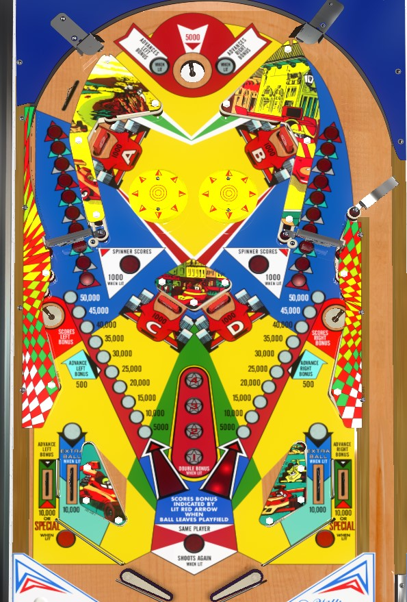

Rip spinners all day to build that side's bonus. When a bonus value is maxed, continue to shoot that spinner for 1,000 points a spin, or shoot the corresponding saucer to collect and drain the bonus to be built again. Knock down A+B or C+D once to double the bonus, but ignore them after that unless extra balls and specials are meaningful for you. Only one side bonus is collected at the end of the ball; left bonus for odd numbered balls, right bonus for even numbered balls.
Always try to plunge all the way up to the saucer. The saucer scores 5,000 points and gives either 1 or 2 bonus advance to the lit bonus, based on settings. Which bonus is added to alternates with 10-point switch hits, and there are two of these at the top of the table, one on either side of the saucer.
Note that a single bonus advance is worth 5,000 in base bonus, as opposed to most games where bonus increments by 1,000 or 2,000.
Hitting both A and B near the bumpers, or hitting both C and D in the center of the playfield, advances the lit stars in the middle of the playfield. Lighting the 1st star means all bonus, both at the end of the ball and collected from the side saucers, is doubled; the 2nd star lights one of the in lanes alternately for extra ball; the 3rd star awards the extra ball outright if it was not already collected from an in lane; the 4th star lights the out lanes alternately for special.
Getting the first star should always be priority, but if extra balls are off, there's no reason to continue shooting drop targets after getting 1 star, since extra ball and special cannot have a point value.
The spinners are worth 100 points per spin, and every 5 spins advances that side's bonus. If one of the bonuses is maxed out at 50,000 points, that side's spinner becomes worth 1,000 per spin instead. Hitting the saucer on either side of the table collects and drains that side's bonus (including doubling the bonus if the 1 star is lit).
If double bonus is lit, try to collect a bonus at the side saucer as soon as it's filled; if double bonus is not lit yet, there's no advantage or disadvantage to collecting the bonus instead of hitting the spinner again due to the increased value of a maxed out spinner (but if this is the case, you really should be shooting to light the double bonus anyway).
Note that at the end of the ball, only the bonus with the lit arrow is collected, but both saucers can be hit for a collect as many times as possible. The lit arrow alternates between balls, and cannot be changed mid ball.
The flippers and lane structures as pretty normal, but the in lanes are open to the out lanes in the corners. Don't try to hold up the flipper to catch the ball in this game, or the ball will spill into the out lane. Don't shatz pass either for similar reasons, though it's almost never necessary to do so. When a ball is coming to the flipper, become comfortable with waiting until after a dead bounce to get it under control.